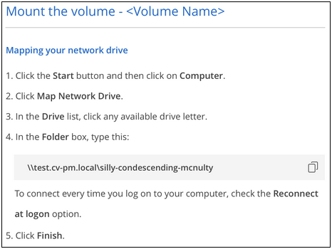

Demander de modifier un document
Demander de modifier un document Modifier sur GitHub
Modifier sur GitHub Guide des contributeurs
Guide des contributeursGestion d’Cloud Volumes Service pour AWS
Contributeurs
BlueXP vous permet de créer des volumes cloud basés sur votre "Cloud Volumes Service pour AWS" abonnement. Vous pouvez également découvrir les volumes cloud que vous avez déjà créés à partir de l’interface Cloud Volumes Service et les ajouter à un environnement de travail.

|
Avec le lancement de "Amazon FSX pour ONTAP", Vous ne pouvez plus créer de nouveaux environnements de travail CVS pour AWS dans BlueXP. Cependant, si vous aviez déjà ajouté CVS pour les environnements de travail AWS à BlueXP, vous pouvez continuer à créer et à gérer des volumes. |
Création de volumes cloud
Pour les configurations dans lesquelles des volumes existent déjà dans l’environnement de travail Cloud Volumes Service, vous pouvez utiliser ces étapes pour ajouter de nouveaux volumes.
Pour les configurations où aucun volume n’existe, vous pouvez créer votre premier volume directement depuis BlueXP après avoir configuré votre abonnement Cloud Volumes Service pour AWS. Auparavant, le premier volume devait être créé directement dans l’interface utilisateur de Cloud Volumes Service.
-
Si vous souhaitez utiliser SMB dans AWS, vous devez avoir configuré DNS et Active Directory.
-
Lorsque vous prévoyez de créer un volume SMB, vous devez disposer d’un serveur Windows Active Directory disponible auquel vous pouvez vous connecter. Vous entrez ces informations lors de la création du volume. Assurez-vous également que l’utilisateur administrateur peut créer un compte machine dans le chemin d’unité organisationnelle spécifié.
-
Vous aurez besoin de ces informations lors de la création du premier volume dans une nouvelle région/environnement de travail :
-
ID de compte AWS : identifiant de compte Amazon à 12 chiffres sans tirets. Pour connaître votre ID de compte, reportez-vous à ce document "Rubrique AWS".
-
Blocage de routage inter-domaines (CIDR) sans classe : un bloc CIDR IPv4 non utilisé. Le préfixe réseau doit être compris entre /16 et /28 et doit également se trouver dans les plages réservées aux réseaux privés (RFC 1918). Ne choisissez pas un réseau qui chevauche vos allocations VPC CIDR.
-
-
Sélectionnez un environnement de travail CVS pour AWS et cliquez sur Ajouter un nouveau volume.

-
Si vous ajoutez le premier volume à l’environnement de travail de la région, vous devez ajouter les informations de mise en réseau AWS.
-
Saisissez la plage IPv4 (CIDR) pour la région.
-
Entrez l’ID de compte AWS à 12 chiffres (sans tiret) pour connecter votre compte Cloud volumes à votre compte AWS.
-
Cliquez sur Continuer.

-
-
La page accepter les interfaces virtuelles décrit certaines étapes que vous devrez effectuer après avoir ajouté le volume pour que vous soyez prêt à effectuer cette étape. Cliquez à nouveau sur Continuer.
-
Dans la page Détails et étiquettes, entrez les détails du volume :
-
Entrez un nom pour le volume.
-
Spécifiez une taille comprise entre 100 Gio et 90,000 Gio (équivalent à 88 Tibs).
-
Spécifier un niveau de service : standard, Premium ou Extreme.
-
Entrez un ou plusieurs noms d’étiquettes pour classer le volume si vous le souhaitez.
-
Cliquez sur Continuer.

-
-
Sur la page Protocol, sélectionnez NFS, SMB ou Dual Protocol, puis définissez les détails. Les entrées requises pour NFS et SMB sont répertoriées dans les sections ci-après.
-
Dans le champ chemin du volume, indiquez le nom de l’exportation de volume que vous verrez lors du montage du volume.
-
Si vous sélectionnez Protocole double, vous pouvez sélectionner le style de sécurité en sélectionnant NTFS ou UNIX. Les styles de sécurité affectent le type d’autorisation de fichier utilisé et la manière dont les autorisations peuvent être modifiées.
-
UNIX utilise les bits du mode NFSv3 et seuls les clients NFS peuvent modifier les autorisations.
-
NTFS utilise les listes de contrôle d’accès NTFS et seuls les clients SMB peuvent modifier les autorisations.
-
-
Pour NFS :
-
Dans le champ version NFS, sélectionnez NFS v3, NFS v4.1 ou les deux en fonction de vos exigences.
-
Vous pouvez également créer une export-policy pour identifier les clients pouvant accéder au volume. Spécifiez :
-
Clients autorisés à l’aide d’une adresse IP ou d’un routage inter-domaines sans classe (CIDR).
-
Droits d’accès en lecture et écriture ou lecture seule.
-
Protocole d’accès (ou protocoles si le volume autorise l’accès NFS v3 et NFS v4.1) utilisé pour les utilisateurs.
-
Cliquez sur + Ajouter règle de stratégie d’exportation si vous souhaitez définir des règles de stratégie d’exportation supplémentaires.
L’image suivante montre la page Volume remplie pour le protocole NFS :
-
-
-
Pour SMB :
-
Vous pouvez activer le chiffrement de session SMB en cochant la case SMB Protocol Encryption.
-
Vous pouvez intégrer le volume à un serveur Windows Active Directory existant en remplissant les champs de la section Active Directory :
Champ Description Adresse IP principale DNS
Les adresses IP des serveurs DNS qui fournissent une résolution de nom pour le serveur SMB. Utilisez une virgule pour séparer les adresses IP lorsque vous faites référence à plusieurs serveurs, par exemple 172.31.25.223, 172.31.2.74.
Domaine Active Directory à rejoindre
Le FQDN du domaine Active Directory (AD) que vous souhaitez que le serveur SMB rejoint. Si vous utilisez AWS Managed Microsoft AD, utilisez la valeur du champ « Directory DNS name ».
Nom NetBIOS du serveur SMB
Nom NetBIOS du serveur SMB qui sera créé.
Informations d’identification autorisées à rejoindre le domaine
Nom et mot de passe d’un compte Windows disposant de privilèges suffisants pour ajouter des ordinateurs à l’unité d’organisation spécifiée dans le domaine AD.
Unité organisationnelle
Unité organisationnelle au sein du domaine AD à associer au serveur SMB. La valeur par défaut est CN=Computers pour les connexions à votre propre serveur Windows Active Directory. Si vous configurez AWS Managed Microsoft AD en tant que serveur AD pour Cloud Volumes Service, vous devez entrer ou=ordinateurs,ou=corp dans ce champ.
L’image suivante montre la page Volume remplie pour le protocole SMB :


Suivez les recommandations relatives aux paramètres des groupes de sécurité AWS pour permettre l’intégration correcte des volumes cloud avec les serveurs Windows Active Directory. Voir "Paramètres des groupes de sécurité AWS pour les serveurs Windows AD" pour en savoir plus. -
-
Sur la page Volume à partir de Snapshot, si vous souhaitez créer ce volume en fonction d’un snapshot d’un volume existant, sélectionnez l’instantané dans la liste déroulante Nom de l’instantané.
-
Sur la page règle Snapshot, vous pouvez activer Cloud Volumes Service pour créer des copies snapshot de vos volumes selon un planning. Vous pouvez le faire maintenant ou le modifier ultérieurement pour définir la stratégie de snapshot.
Voir "Création d’une règle Snapshot" pour plus d’informations sur la fonctionnalité de snapshot.
-
Cliquez sur Ajouter un volume.
Le nouveau volume est ajouté à l’environnement de travail.
S’il s’agit du premier volume créé dans cet abonnement AWS, vous devez lancer la console de gestion AWS pour accepter les deux interfaces virtuelles qui seront utilisées dans cette région AWS pour connecter l’ensemble de vos volumes cloud. Voir la "Guide de configuration de compte NetApp Cloud Volumes Service pour AWS" pour plus d’informations.
Vous devez accepter les interfaces dans les 10 minutes après avoir cliqué sur le bouton Ajouter un volume pour que le système se déchaîne. Dans ce cas, envoyez un e-mail à cvs-support@netapp.com avec votre ID client AWS et votre numéro de série NetApp. Le support corrigera le problème et vous pourrez redémarrer le processus d’intégration.
Puis continuer avec "Montage du volume cloud".
Montez le volume cloud
Vous pouvez monter un volume cloud sur votre instance AWS. Les volumes cloud prennent actuellement en charge NFSv3 et NFSv4.1 pour les clients Linux et UNIX, ainsi que SMB 3.0 et 3.1.1 pour les clients Windows.
Remarque : Veuillez utiliser le protocole/dialecte mis en évidence pris en charge par votre client.
-
Ouvrir l’environnement de travail.
-
Placez le pointeur de la souris sur le volume et cliquez sur montez le volume.
Les volumes NFS et SMB affichent des instructions de montage pour ce protocole. Les volumes à double protocole fournissent ces deux ensembles d’instructions.
-
Placez le pointeur de la souris sur les commandes et copiez-les dans le presse-papiers pour faciliter ce processus. Ajoutez simplement le répertoire de destination/point de montage à la fin de la commande.
Exemple NFS:

La taille d’E/S maximale définie par le
rsizeetwsizeles options sont 1048576. cependant, la version 65536 est la valeur par défaut recommandée pour la plupart des cas d’utilisation.Notez que les clients Linux seront par défaut sur NFSv4.1 à moins que la version soit spécifiée avec
vers=<nfs_version>option.Exemple SMB:

-
Connectez-vous à votre instance Amazon Elastic Compute Cloud (EC2) à l’aide d’un client SSH ou RDP, puis suivez les instructions de montage pour votre instance.
Après avoir terminé les étapes des instructions de montage, vous avez correctement monté le volume cloud sur votre instance AWS.
Gestion des volumes existants
Vous pouvez gérer les volumes existants à mesure que vos besoins de stockage changent. Vous pouvez afficher, modifier, restaurer et supprimer des volumes.
-
Ouvrir l’environnement de travail.
-
Placez le pointeur de la souris sur le volume.

-
Gérez vos volumes :
Tâche Action Afficher des informations sur un volume
Sélectionnez un volume, puis cliquez sur Info.
Modification d’un volume (y compris la règle Snapshot)
-
Sélectionnez un volume, puis cliquez sur Modifier.
-
Modifiez les propriétés du volume, puis cliquez sur mettre à jour.
Procurez-vous la commande NFS ou SMB mount
-
Sélectionnez un volume, puis cliquez sur Monter le volume.
-
Cliquez sur Copier pour copier la ou les commandes.
Créez une copie Snapshot à la demande
-
Sélectionnez un volume, puis cliquez sur Créer une copie snapshot.
-
Modifiez le nom de l’instantané, si nécessaire, puis cliquez sur Créer.
Remplacez le volume par le contenu d’une copie Snapshot
-
Sélectionnez un volume, puis cliquez sur revenir au snapshot.
-
Sélectionnez une copie Snapshot et cliquez sur Revert.
Supprimez une copie Snapshot
-
Sélectionnez un volume, puis cliquez sur Supprimer une copie snapshot.
-
Sélectionnez la copie Snapshot à supprimer et cliquez sur Supprimer.
-
Cliquez à nouveau sur Supprimer pour confirmer.
Supprimer un volume
-
Démonter le volume de tous les clients :
-
Sur les clients Linux, utilisez
umountcommande. -
Sur les clients Windows, cliquez sur déconnecter le lecteur réseau.
-
-
Sélectionnez un volume, puis cliquez sur Supprimer.
-
Cliquez à nouveau sur Supprimer pour confirmer.
-
Retirez Cloud Volumes Service de BlueXP
Vous pouvez supprimer un abonnement Cloud Volumes Service pour AWS et tous les volumes existants de BlueXP. Les volumes ne sont pas supprimés, ils sont simplement supprimés de l’interface BlueXP.
-
Ouvrir l’environnement de travail.

-
Cliquez sur le bouton
 En haut de la page, cliquez sur Supprimer Cloud Volumes Service.
En haut de la page, cliquez sur Supprimer Cloud Volumes Service. -
Dans la boîte de dialogue de confirmation, cliquez sur Supprimer.
Gérer la configuration d’Active Directory
Si vous modifiez vos serveurs DNS ou votre domaine Active Directory, vous devez modifier le serveur SMB dans Cloud volumes Services afin qu’il puisse continuer à fournir du stockage aux clients.
Vous pouvez également supprimer le lien vers un Active Directory si vous n’en avez plus besoin.
-
Ouvrir l’environnement de travail.
-
Cliquez sur le bouton
En haut de la page, cliquez sur gérer Active Directory. -
Si aucun Active Directory n’est configuré, vous pouvez en ajouter un maintenant. Si l’un d’eux est configuré, vous pouvez modifier les paramètres ou le supprimer à l’aide du
bouton. -
Spécifiez les paramètres de l’Active Directory que vous souhaitez joindre :
Champ Description Adresse IP principale DNS
Les adresses IP des serveurs DNS qui fournissent une résolution de nom pour le serveur SMB. Utilisez une virgule pour séparer les adresses IP lorsque vous faites référence à plusieurs serveurs, par exemple 172.31.25.223, 172.31.2.74.
Domaine Active Directory à rejoindre
Le FQDN du domaine Active Directory (AD) que vous souhaitez que le serveur SMB rejoint. Si vous utilisez AWS Managed Microsoft AD, utilisez la valeur du champ « Directory DNS name ».
Nom NetBIOS du serveur SMB
Nom NetBIOS du serveur SMB qui sera créé.
Informations d’identification autorisées à rejoindre le domaine
Nom et mot de passe d’un compte Windows disposant de privilèges suffisants pour ajouter des ordinateurs à l’unité d’organisation spécifiée dans le domaine AD.
Unité organisationnelle
Unité organisationnelle au sein du domaine AD à associer au serveur SMB. La valeur par défaut est CN=Computers pour les connexions à votre propre serveur Windows Active Directory. Si vous configurez AWS Managed Microsoft AD en tant que serveur AD pour Cloud Volumes Service, vous devez entrer ou=ordinateurs,ou=corp dans ce champ.
-
Cliquez sur Enregistrer pour enregistrer vos paramètres.